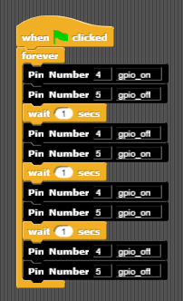

5.1 Blink RGB
We can use many GPIO pins to output or input at once. Let’s use a few at once to mix colors in our awesome Red Green Blue RGB. These are the primary colors of light, different then the primary colors of paint (Red Yellow Blue). When you mix paints together you get black, but when you mix these three colors of light together, you get white!
Wire Like This
GPIO # 4 <–> R
GPIO # 5 <–> B

Code Screenshot

Drag to the desired GPIO pin and then choose On or Off